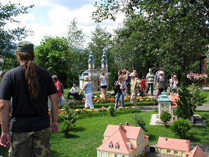

Kowary - park miniatur
28 lipca 2008 roku wybra³em siê na wycieczkê do Kowar - chcia³em zobaczyæ tamtejszy park miniatur. Oczywiœcie eksponatem który najbardziej chcia³em zobaczyæ to miniatura krzeszowskiej bazyliki (która wystêpuje tu jako "Opactwo Cysterskie w Krzeszowie" - choæ raczej jest to tylko jeden z obiektów opactwa).
| I trzeba przyznaæ, ¿e miniatura naprawdê przypomina orygina³ ... | |
| Oczywiœcie nie jest to wierna kopia krzeszowskiego koœcio³a - gdzieniegdzie czegoœ brakuje (np. rzeŸby Duch Œwiêty (go³êbica) ponad scen¹ Zwiastowania) a gdzieniegdzie czegoœ zbywa (np. Scena Nawiedzenia – spotkania Maryi z œw. El¿biet¹ - w oryginale rzeŸby Maryi i El¿biety nie maj¹ d³oni; czy te¿ druga tarcza zegara na elewacji której te¿ dziœ ju¿ nie zobaczymy). | |
| Z innych "krzeszowskich" akcentów mo¿emy w parku zobaczyæ miniaturê kaplicy œw. Wawrzyñca (i to w dwóch egzemplarzach - na zewn¹trz na "wspó³czesnym" szczycie Œnie¿ki i wewn¹trz hali na jego "starym" wygl¹dzie). Budowê tego obiektu w roku 1665 zlecili hrabia K. L. Schaffgotsch z Cieplic wraz z opatem Bernardem Ros¹ budowniczemu z Kowar a poœwiêcenia ukoñczonej kaplicy opat krzeszowskich cystersów dokona³ po 16 latach, 10 sierpnia 1681 roku. | |
| ... czy te¿ domki "Dwunastu Aposto³ów" z Che³mska Œl¹skiego (wybudowane w 1707 roku na zlecenie krzeszowskiego opata Dominika Geyera, w mieœcie bêd¹cym wówczas w³asnoœci¹ klasztoru). | |
|  | Park miniatur moim zdaniem jest miejscem wartym odwiedzenia. Przystêpne ceny biletów, bezp³atny parking, kilku przewodników równoczeœnie oprowadzaj¹cych po parku i ciekawie opowiadane historie obiektów, wiernie wykonane miniatury - nie dziwi wiêc widok naprawdê wielu zwiedzaj¹cych. |

{kind=link}
{kind=link}
{kind=link}
{kind=link}
{kind=link}